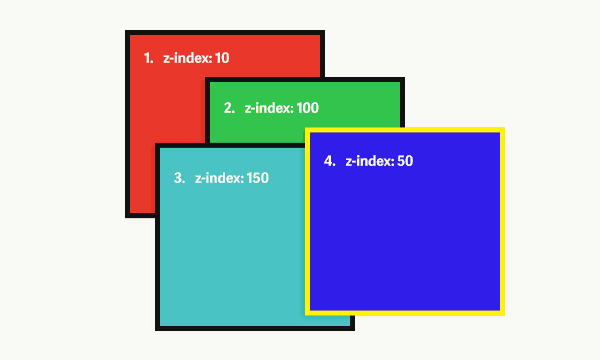

Esta tabla contiene información sobre distintos atributos CSS y su
función.
| Nombre del Atributo |
Descripción |
Valores Posibles |
Ejemplo de Uso |
Imagen |
Fuente |
| color |
Define el color del texto. |
Nombre, Hex, RGB |
p { color: blue; } |
 |
FUENTE DE REFERENCIA
|
| background-color |
Define el color de fondo de un elemento. |
Nombre, Hex, RGB |
body { background-color: #f4f4f4; } |
|
FUENTE DE REFERENCIA
|
| font-size |
Define el tamaño de la fuente. |
px, em, rem, % |
h1 { font-size: 2em; } |
 |
FUENTE DE REFERENCIA
|
| border-radius |
Define el radio de las esquinas del borde. |
px, % |
div { border-radius: 10px; } |
 |
FUENTE DE REFERENCIA
|
| display |
Define cómo se muestra un elemento. |
block, inline, flex, grid |
span { display: inline; } |
 |
FUENTE DE REFERENCIA
|
| flexbox (display: flex) |
Define un contenedor flexible. |
flex, inline-flex |
div { display: flex; } |
|
FUENTE DE REFERENCIA
|
| position |
Define la posición de un elemento. |
static, relative, absolute, fixed, sticky |
div { position: absolute; } |
|
FUENTE DE REFERENCIA
|
| box-shadow |
Aplica una sombra a un elemento. |
none, h-offset v-offset blur spread color |
div { box-shadow: 2px 2px 5px grey; } |
|
FUENTE DE REFERENCIA
|
| overflow |
Controla el contenido desbordado. |
visible, hidden, scroll, auto |
div { overflow: hidden; } |
 |
FUENTE DE REFERENCIA
|
| z-index |
Define el orden de apilamiento de un elemento. |
número |
div { z-index: 10; } |
 |
FUENTE DE REFERENCIA
|
| opacity |
Define la opacidad de un elemento. |
0.0 - 1.0 |
div { opacity: 0.5; } |
|
FUENTE DE REFERENCIA
|
| margin |
Define el margen exterior de un elemento. |
px, em, % |
div { margin: 20px; } |
|
FUENTE DE REFERENCIA
|
| padding |
Define el relleno interior de un elemento. |
px, em, % |
div { padding: 20px; } |
|
FUENTE DE REFERENCIA
|
| text-align |
Define la alineación del texto dentro de un elemento. |
left, right, center, justify |
p { text-align: center; } |
|
FUENTE DE REFERENCIA
|